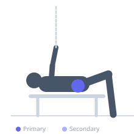

Exercise guide / Clamshell
Clamshell
The clamshell is a side-lying hip external rotation exercise in which the feet remain stacked and together while the top knee is raised toward the ceiling, mimicking the opening of a clamshell. It isolates the gluteus medius with a focus on external rotation and abduction, making it one of the most prescribed exercises in physical therapy for hip, knee, and lower back rehabilitation. A resistance band above the knees increases the load.
Primary muscles
gluteus medius
Secondary muscles
gluteus minimus
tensor fasciae latae
Stabilizers
erector spinae
transverse abdominis
Equipment
No Equipment (Bodyweight)
Optional
Resistance Band (Loop / Mini Band)


Starting position
- Lie on one side with hips stacked, knees bent to approximately 45°, and feet together. The head rests on the lower arm.
Setup
- No equipment needed for bodyweight. Place a mini loop band just above the knees for added resistance.
Steps
- Step 1: Lie on your side with hips stacked and knees bent at 45°. Keep the feet together throughout.
- Step 2: Keeping the feet together, raise the top knee toward the ceiling by externally rotating the hip.
- Step 3: Open until the top knee is as high as possible without letting the pelvis roll backward.
- Step 4: Hold the peak position, then lower the knee back to the start under control.
- Step 5: Complete all reps on one side then switch.
Coaching cues
- Open like a clamshell — feet stay touching
- Don't let the pelvis roll back — keep the hips stacked
- Squeeze the glute at the top
Breathing
- Exhale as you open the knee. Inhale as you close.
Range of motion
- Open the knee as far as possible without pelvic roll. Quality of rotation matters more than range.
Tempo
- 2-1-2-0
Common mistakes
- Rolling the pelvis backward to increase range — the hip should rotate, not the spine
- Raising the knee so high that the pelvis tilts — control the range
- Using momentum instead of a slow, controlled movement
Safety
- Very low-risk exercise suitable for all fitness levels
- Often prescribed in rehabilitation for IT band syndrome, patellofemoral pain, and hip pain
Training
- hypertrophy: 15–25 reps
- endurance: 20–30 reps
- hypertrophy: 2–3 sets
- endurance: 2–3 sets
- Rest: {'hypertrophy': 45, 'endurance': 30}